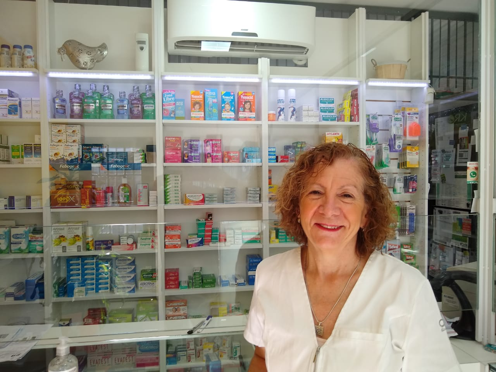
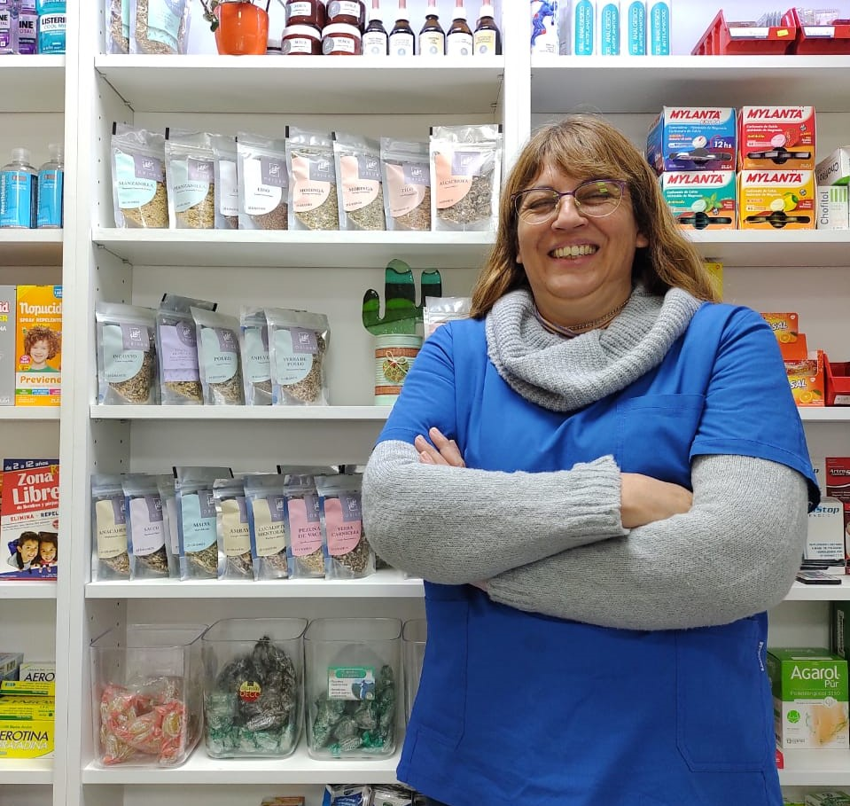

Quienes somos los que trabajamos en Farmacia Aguirre?
Miriam Aguirre
Farmacéutica UBA- M.P. 11618 Directora técnica
Me recibí en el año 1987 e inicie mi ejercicio profesional en el Hospital Posadas y en el Hospital Larcade. Poco tiempo después junto a mi marido tomamos la decisión de independizarnos, pensando que era la mejor opción para la conjunción trabajo y familia. Pasaron muchos años y sin duda la elección fue correcta. Aqui estamos, no hubo crisis ni pandemia que cambiara eso. Felices del espacio que hicimos.
Francisco Deandreis Aguirre
Nuestro hijo y estudiante de farmacia ... el Heredero
Hoy nos enorgullece que haya tomado la decisión de continuar con la profesión y el camino recorrido. Su primera profesión fue bartender pero hace poco fue conquistado por el mundo de los medicamentos. Es clave en la incorporación de tecnología, la comprensión y uso de la misma. Es el hábil operador de nuestro whatsapp y casi siempre del teléfono. Esperamos que en poco tiempo sea el profesional a cargo.
Carina Cañete
Nuestras manos más valiosas. Hace ya años que nos acompaña, comienza a ser parte del barrio y es un engranaje indispensable en el desarrollo de nuestras tareas. La tarea de las farmacias en general es muy compleja, el procesamiento de las recetas y la trazabilidad de los medicamentos es muy laborioso, sin ella sería imposible.